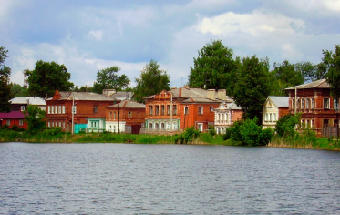
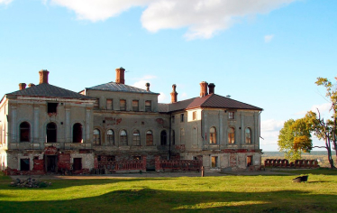
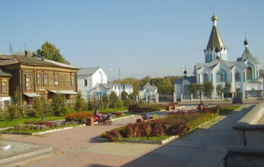

Подробнее о нас
Богородск - старинный город в Нижегородской области. Такие небольшие и старинные городишки и формируют облик исторический облик и душу России.
Бытует версия, что город основали опальные жители Великого Новгорода. Иван Грозный, разгромив этот город в 1570 году, часть его жителей казнил, а часть выслал в другие места Московского государства. Группа новгородцев до 300 человек попала в Нижегородское Березополье и обосновалась на проезжей дороге между Нижним Новгородом и Муромом, в 40 верстах от первого. Так и возник город Богородск. Благодаря этому город и славен своими мастерами.


